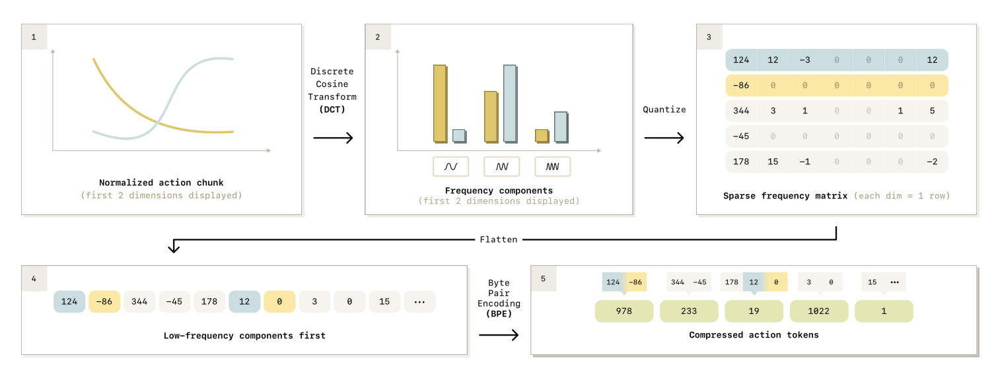
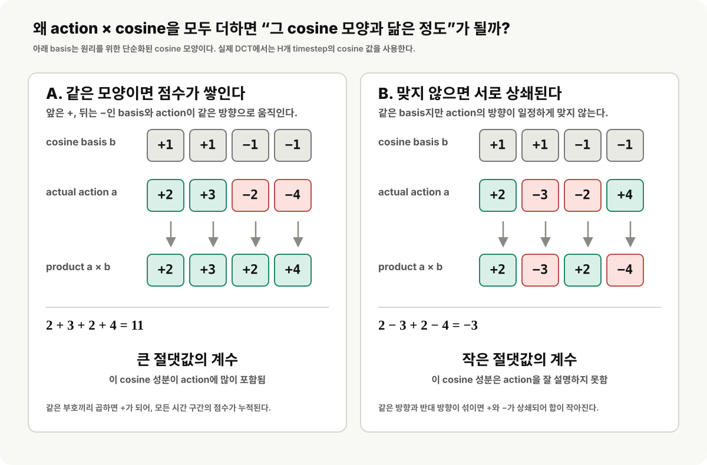

π0-FAST
Efficient Action Tokenization for Vision-Language-Action Models.
π0-FAST는 π0의 flow-matching action generator와 다른 길을 택한다. 연속 로봇 행동을 잘 압축한 discrete token으로 바꾼 뒤, 기존 VLM처럼 autoregressive next-token prediction으로 제어를 학습한다. 핵심 기여는 모델 backbone보다 action tokenization 자체에 있다.
Problem
왜 기존 action tokenization은 고주파 조작에서 무너지는가?
기존 autoregressive VLA는 매 timestep·매 action dimension을 독립적으로 256개 bin 중 하나로 바꾼다. 하지만 제어 주파수가 높을수록 연속한 행동은 거의 같은 값이 된다. 모델은 의미 있는 운동 구조 대신 직전 token을 복사하는 쉬운 해에 빠지고, 긴 action chunk의 token 수와 학습 비용도 빠르게 늘어난다.
High correlation, low information
50 Hz처럼 촘촘한 제어에서는 인접 action이 매우 비슷하다. next-token objective가 배우는 새로운 정보의 양이 작아져 학습이 느리고 불안정해진다.
Too many tokens
1초 action chunk에서 naive binning은 50 Hz 양팔 셔츠 접기 기준 약 700 token을 만든다. attention 비용과 추론 지연이 크게 늘어난다.
The question
연속적인 robot trajectory를 정보량이 높고 짧은 token sequence로 바꾸면, 일반적인 autoregressive VLA도 정교한 manipulation을 배울 수 있는가?
Key Idea
행동을 timestep이 아니라 주파수 성분으로 압축한다
FAST는 JPEG가 이미지의 주파수 성분을 압축하듯, action chunk에 Discrete Cosine Transform(DCT)을 적용한다. 저주파 성분은 trajectory의 전체 모양을, 고주파 성분은 급격한 변화만 담는다. 대부분의 실제 행동은 매끄럽기 때문에 적은 수의 중요한 계수만 남겨도 motion을 충분히 복원할 수 있다.

How to read this figure
이 그림은 “시간 순서의 action”을 “압축된 주파수 token”으로 바꾸는 과정이다
위쪽의 파란색·노란색은 서로 다른 action dimension이고, 각 행은 한 관절 또는 gripper 등의 한 차원을 뜻한다. 3번 그림의 열은 미래 timestep이 아니라 주파수 계수의 순서다. 따라서 오른쪽으로 갈수록 대체로 더 빠르게 흔들리는 성분을 나타낸다.
- 1. Normalized action chunk 예를 들어 미래 1초 동안의 joint-1, joint-2 action 궤적이다. 각 차원을 1%·99% quantile로 대략 [-1, 1] 범위에 맞춘다. 그림에는 이해를 위해 처음 두 차원만 곡선으로 표시했다.
- 2. DCT 각 곡선을 여러 cosine 파형의 합으로 바꾼다. 첫 막대들은 trajectory의 큰 흐름을 담는 저주파 계수이고, 뒤쪽 막대들은 순간적인 흔들림을 담는 고주파 계수다.
-
3. Quantize → sparse frequency matrix
DCT 계수를 scale한 뒤 정수로 round한다. 매끄러운 로봇 motion은 고주파 계수가 작아서 대부분 0이 된다. 여기서
124,-86등은 아직 BPE token이 아니라 양자화된 주파수 계수다. - 4. Flatten, low frequency first 행렬을 한 줄로 펼칠 때 한 action dimension을 끝까지 읽지 않는다. 모든 dimension의 저주파 계수를 먼저 읽는다. 전체 움직임 모양을 먼저 생성하도록 만들어 autoregressive rollout을 안정화한다.
-
5. BPE compressed action tokens
BPE가 자주 함께 등장하는 정수 계수열을 하나의 vocabulary token으로 합친다. 예를 들어 아래의
978은 action 값 978이 아니라, 위쪽의 특정 계수 조합을 가리키는 token ID다. VLA는 이 짧은 token sequence를 autoregressive하게 예측한다.
Normalize
각 action dimension의 1%와 99% quantile을 기준으로 값을 정규화한다. 로봇과 action scale이 달라도 같은 tokenizer를 적용하기 위한 단계다.
DCT and quantize
각 action dimension을 frequency domain으로 바꾸고 계수를 round한다. 중요한 저주파 계수만 남고, 나머지는 대부분 0이 되는 sparse representation을 얻는다.
Flatten and BPE
낮은 주파수부터 계수를 flatten한 뒤, Byte Pair Encoding으로 자주 함께 나타나는 계수 패턴을 합친다. 최종 결과가 VLM vocabulary에 넣을 수 있는 action token이다.
DCT Mathematics
DCT는 action trajectory를 cosine 모양들의 합으로 보는 좌표변환이다
DCT는 학습되는 neural network가 아니라 정해진 수식이다. FAST는 action chunk의 각 dimension을 독립적으로 처리한다. 즉 한 관절의 미래 H개 action 값을 길이 H개의 frequency coefficient로 바꾸며, coefficient의 개수는 줄지 않는다. 실제 압축은 그 다음 quantization과 BPE 단계에서 일어난다.
입력: 한 action dimension의 시간 신호
i번 관절만 떼어 보면, 길이 H의 action chunk는 시간 순서의 값 ai0, …, aiH−1이다. n은 timestep index다.
Forward DCT: 각 cosine 모양과 얼마나 닮았는가
k는 시간 index가 아니라 cosine의 주파수 번호다. 각 Cik는 action 곡선과 k번째 cosine basis의 내적, 즉 그 모양이 얼마나 필요한지를 나타낸다.
Inverse DCT: 계수들을 다시 action 궤적으로 복원
VLA가 예측한 token을 BPE로 풀고 coefficient 행렬을 복원하면, 같은 cosine basis들을 가중합해 원래 시간 순서의 action chunk를 얻는다.

[1, 1, −1, −1]은 원리 설명을 위한 단순화된 basis다.
How to read k
k가 커질수록 더 빠르게 출렁이는 cosine basis를 뜻한다
k = 0은 평평한 모양이라 전체 평균/offset을 담고, k = 1은 천천히 변하는 큰 흐름을 담는다. k = 2, 3, …으로 갈수록 더 많은 굴곡과 빠른 떨림을 표현한다. 실제 robot motion은 보통 매끄러워서 작은 k의 계수에 정보가 집중되고, 큰 k의 계수는 작아지는 경향이 있다.
시간축 index
n = 0, …, H−1은 action chunk 내부의 미래 timestep이다. DCT 전에는 이 축을 따라 관절 command가 나열되어 있다.
주파수축 index
k = 0, …, H−1은 cosine basis의 번호다. DCT 뒤의 열은 timestep이 아니라 각 주파수 성분의 크기 Cᶦₖ다.
그 cosine 모양의 가중치
Cᶦₖ의 절댓값이 크면 i번 관절 trajectory를 만들 때 k번째 cosine 모양이 많이 필요하다는 뜻이다. 부호는 해당 cosine을 같은 방향 또는 반대 방향으로 더한다는 뜻이다.
FAST의 DCT 다음 단계: 계수를 정수로 양자화
DCT 출력은 실수지만, language model이 예측할 수 있게 scale한 뒤 round한다. 논문의 기본 설정은 \(\gamma=10\)이다.
BPE Compression
BPE는 자주 함께 나오는 DCT 계수열에 하나의 token ID를 붙인다
DCT와 quantization 뒤에는 정수 coefficient가 길게 나열된다. BPE(Byte Pair Encoding)는 학습 데이터 전체에서 자주 반복되는 인접한 정수열을 찾아 하나의 새 symbol로 합친다. 이때 새 token은 action 값이 아니라, 여러 coefficient를 가리키는 dictionary ID다.
BPE 전: flatten된 정수 coefficient 열
각 숫자는 양자화된 DCT 계수다. 특히 고주파 쪽에는 작은 값이 round되어 생긴 0이 많이 나타난다.
BPE dictionary의 예시
아래 ID는 그림을 위한 예시다. 실제 dictionary는 action dataset의 계수열을 세어 학습하며, 어떤 ID가 어떤 묶음을 뜻하는지는 그 dictionary가 정한다.
BPE 후: VLA가 실제로 예측하는 FAST token 열
978은 “action 값 978”이 아니다. 위의 [124, −86]이라는 coefficient 묶음을 뜻하는 vocabulary ID이며, VLA는 이 ID들을 next-token prediction으로 생성한다.
처음에는 각 정수 계수가 기본 symbol이다
예를 들어 0, 12, −86 각각을 하나의 symbol로 놓고 시작한다. BPE는 action trajectory를 보며 이 symbol들의 인접 쌍 빈도를 센다.
가장 자주 나오는 인접 쌍을 새 symbol로 병합한다
예를 들어 [0, 0]이 가장 많이 나오면 이를 새 token 하나로 등록한다. 이후에는 그 token도 다른 이웃 token과 다시 병합될 수 있어, 2개뿐 아니라 길이가 3개 이상인 계수열도 한 token이 될 수 있다.
정한 vocabulary 크기까지 반복한다
논문의 기본 설정은 BPE vocabulary 크기 1024다. “최소 몇 번 등장해야 병합한다”는 고정 임계값을 직접 정하는 방식이 아니라, 매 단계에서 가장 빈도가 높은 쌍을 골라 vocabulary가 찰 때까지 병합하는 방식이다.
BPE는 딥러닝 decoder가 아니라, 데이터 빈도로 만들어진 고정 압축 사전이다. FAST에서 DCT가 움직임의 중요한 정보를 저주파 계수에 모으고, quantization이 많은 계수를 0으로 만든 뒤, BPE가 이 반복 패턴을 짧은 token 열로 바꾼다.
FAST+
특정 데이터셋이 아닌 범용 action tokenizer
FAST의 BPE vocabulary는 학습이 필요하지만, 저자들은 약 100만 개의 실제 robot action chunk로 학습한 범용 tokenizer FAST+를 공개했다. single-arm, bimanual, mobile robot과 서로 다른 control frequency·action space에 적용할 수 있는 off-the-shelf tokenizer가 목표다.
1-second action chunk
로봇마다 다른 제어 주파수라도 약 1초 길이의 sequence를 token화하는 방식으로 입력 단위를 통일한다.
Small, practical vocabulary
DCT 기반 절차는 분석적이고 빠르며, BPE vocabulary 학습도 보통 수 분 안에 끝난다. learned VQ tokenizer보다 튜닝 부담이 작다는 점을 강조한다.
Results
π0의 성능을 유지하면서 학습을 최대 5배 빠르게
π0-FAST는 π0와 같은 PaliGemma-3B 기반 VLA에 FAST token을 붙인다. 저자들은 10,000시간 규모의 cross-embodiment data에서도 autoregressive 학습을 확장할 수 있고, dexterous 및 long-horizon manipulation에서 diffusion/flow 기반 π0에 견줄 성능을 내면서 training time을 최대 5배 줄였다고 보고한다.
Compression grows with control frequency
높은 주파수일수록 중복이 많기 때문에 FAST의 이점이 더 커진다. 논문의 예에서 50 Hz 양팔 셔츠 접기는 700개 naive token이 약 53개 FAST token으로 줄어든다.
Autoregressive VLA becomes viable for dexterity
기존 binning이 어려워하던 고주파 manipulation에서도 next-token prediction만으로 유효한 policy를 학습할 수 있음을 보인다.
π0와의 관계
π0는 continuous flow action을 직접 생성하고, π0-FAST는 잘 압축한 discrete action token을 autoregressive하게 생성한다. 같은 범용 VLA 목표에 대한 서로 다른 action-generation 해법이다.
원문: FAST: Efficient Action Tokenization for Vision-Language-Action Models ↗